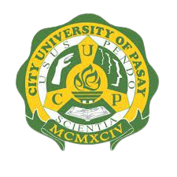
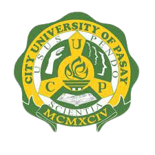
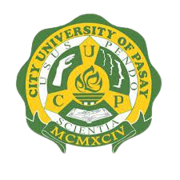

CITY UNIVERSITY OF PASAY CUP
(Pamantasan Lungsod ng Pasay)
Pasadeña St., F.B. Harrison Pasay City, M.M
Tel. No. 88846-75-74
ACADEMICS
ADMISSION
CUP-COMMITMENTS
ABOUT US
City University of Pasay (Pamantasan ng Lungsod ng Pasay), commonly abbreviated
as CUPasay, is a city-controlled, public university in Pasadeña St.,F.B. Harrison,
Pasay. Its major purpose is to provide education to the less-privileged yet deserving
students of the city and to some others that meet admission requirements set forth
by the Board of Regents.
 
